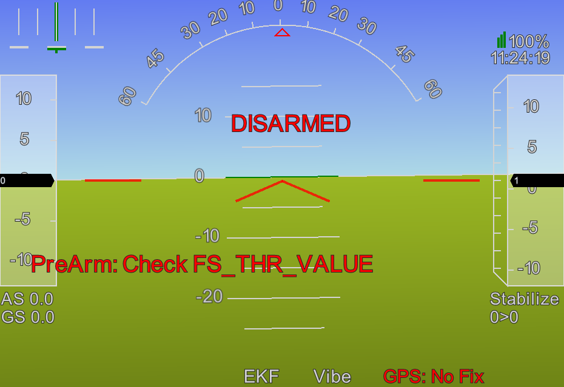
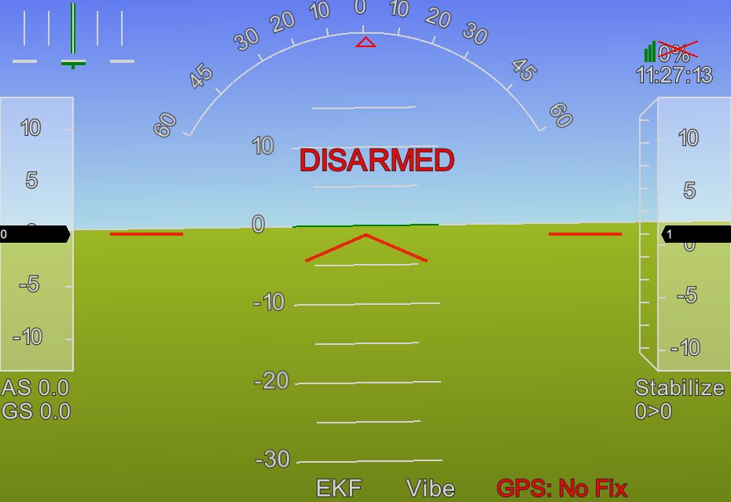
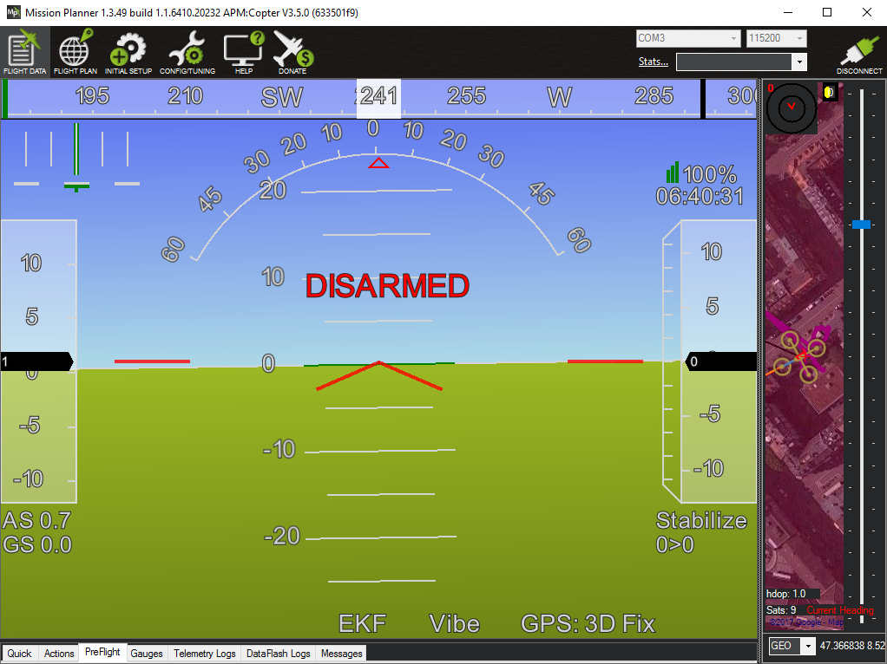
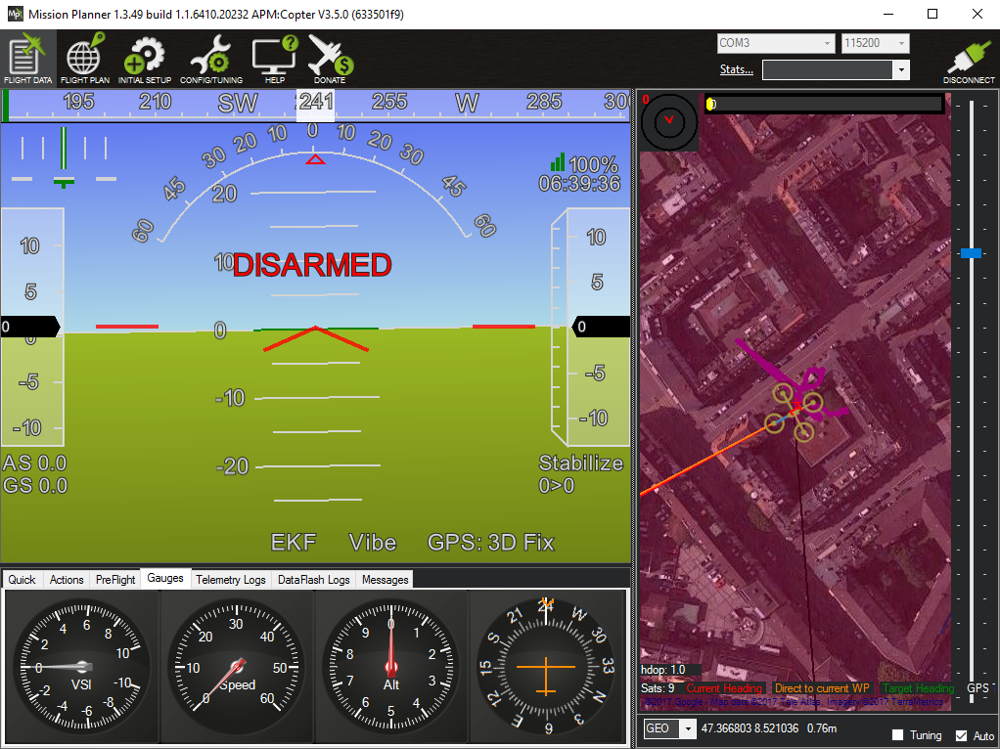

Pixhawk setup
In order to setup your Pixhawk you need a ground control application. Ground control applications fulfil a number of roles. Once your system is fully setup it's the software that you run on your computer to plan out routes that can be uploaded to the Pixhawk and can then be followed autonomously by your craft once it's in the air. If you've got a telemetry kit (like this one), made up of a ground module that's plugged into your computer and an air module that's plugged into the flight controller on your craft, then the ground control software can track the status of your craft in-flight (showing it's location, battery level and other telemetry data) and also control it in a similar fashion to your transmitter.
But most importantly initially, the ground control application is used to setup and configure your flight controller. It's use after this is optional. Once you've connected your flight controller to your computer via USB you can use the ground control application to update the flight stack (either ArduCopter or PX4 in our case), calibrate the craft's sensors and set up the flight stack (configuring things such as flight modes).
There are a number of ground control applications - the two most popular are Mission Planner (MP) and QGroundControl (QGC). MP only supports the ArduPilot flight stack and only runs on Windows. QGC supports both ArduPilot and PX4 and it runs on Windows, Mac and Linux.
However MP is by far the most used, so despite the fact that I use a Mac myself I'll go through setup using MP on Windows first. You can find QGC covered here.
TODO: add pointer to /arf-drone/docs/windows-vm and add note on the need to add a USB filter for the Pixhawk.
Note: the ArduCopter site describes another ground control application called APM Planner 2 (APMP2) as the best one for Mac and Linux. But this is just a plug for a project that's closely associated with ArduPilot. I found that the most common questions asked regarding it were of the form "I can do X in MP, how do I do X in APMP2?" with the answer almost invariably of the form "You can't do X in APMP2, APMP2 isn't really intended for that use case." So it seems they're not even aiming to create a full feature ground control application - it's unclear though what particular audience they are targeting.
Previously I've referred to the software running on the flight controller as the flight stack - here I refer to it as the Pixhawk firmware as this is how its referred to in MP and QGC.
Drivers
TL;DR on Windows all necessary drivers for the Pixhawk are installed for you when you install MP.
For reasons we won't go into here Microsoft Windows has a much bigger issue than Mac or Linux with small hobbyist electronic devices that aren't backed by big corporations (who can pay up for a USB vendor ID and Windows certification).
Often these devices appear to your computer as simple serial devices (the kind of thing that was common back in the days when people still used analog modems) or as generic USB storage devices. As such they can generally be connected to Mac or Linux machines without the need to install any extra drivers. This is not the case with Windows - here driver installation and setup generally forms a major part of creating a connection between your computer and one of these device for the first time.
If updating the firmware on your transmitter or receiver via your computer or trying to connect a small FPV flight controller to something like CleanFlight or BetaFlight the driver setup generally involves something like Zadig on Windows (though recently an apparently more convenient/automatic solution is available, for flight controllers at least, in the form of the ImpulseRC Driver Fixer Tool).
Having said all that it's nice to find out that for the Pixhawk drivers aren't an issue on any plaform, whether it's Windows, Mac or Linux. Mac and Linux don't need any additional drivers and on Windows the popular ground control applications, like MP or QGC, automatically install the correct Pixhawk related drivers rather than leaving it to you as a separate step.
Mission Planner setup
Download the latest MP version using the link in the installation section of the MP documentation (you can also browse around in the directory containing the MP installation file if you're interested). At the time of writing (and for some time now) the EU mirror for MP is amazingly slow - it takes more than 20 minutes to download the roughtly 60MB installation file.
As noted already MP also installs all necessary Pixhawk drivers so no additional driver installation is needed. When running MP for the first time it asks you if you want to enable Altitude Angel data - you should select Yes as this data is needed by MP to highlight things like restricted airspaces around airports. You then have to register for a free Altitude Angel account and allow MP to access it. In the background Windows will also have popped up a Firewall dialog asking if you want to allow MP to access networks (I ticked the boxes for both private and public networks). It then asks you if you want to run the setup wizard - to set up your Pixhawk - however I suggest skipping the wizard at this point and just let it open the normal full MP application.
If you look carefully at the console output (the black window that opens in the background behind the MP splash screen) you can see the code complaining about the lack of internet access and such like when you start MP for the very first time and you haven't yet handled the Windows Firewall dialog. So while it's probably unnecessary I'd suggest restarting straight away after first startup so that it can startup cleanly with all the access it expects.
Wizard start up.
Once MP is up and running you can go to Initial Setup and click on Wizard. But first it's important to know that the wizard runs in two distinct modes depending on whether you've already pressed the Connect button (in the upper right of the main MP window). Assuming your Pixhawk is connected to your computer via USB then:
- If you start the wizard without having pressed Connect one of the wizard steps will involve upgrading the Pixhawk firmware.
- If you instead press Connect before starting the wizard then it will skip the firmware upgrade step.
The Pixhawk's firmware can only be upgraded if it's connected to your computer but not currently connected to MP itself.
This is important as it turns out that you will need to rerun the wizard at least once and upgrading the firmware is a time consuming step that should be done just once and then skipped during subsequent runs of the wizard. So if you've completed the firmware upgrade step and find you need to rerun the wizard always press Connect first.
Steps
Step 1 - vehicle. | Step 2 - frame type. | Step 3 - connecting. | Step 4 - frame layout. |
Step 5 - accelerometer | Step 6A - compass. | Step 6B - compass. | Step 7 - battery monitor. |
Step 8/9 - optional items. | Step 10A - transmitter. | Step 10B - transmitter. | Step 11 - flight modes. |
Step 12 - verification. | Step 13 - failsafes. | Step 14 - geofence. | Step 15 - useful links. |
The above table shows all the steps of the wizard. Steps 1 and 3 are skipped if, as described above, you've pressed Connect before starting the wizard. If you're confused about any step below the pictures above show the correctly selected options for all steps.
Getting started
Connect your Pixhawk to your computer via USB, start MP, go to Initial Setup and click on Wizard. The initial steps are fairly self explanatory - first you select your vehicle type (multirotor) and then the multirotor type (the simple four motor X type). Then the firmware upgrade step - make sure your Pixhawk is connected and select it from the dropdown list of connected serial device (most probably there'll only be one item in the list).
I'll have to admit I never completed this step. I have no Windows machine so I run Windows as a VM within VirtualBox and while all other aspects of using MP with VirtualBox worked perfectly, trying to install firmware never worked. So instead I always loaded firmware using QGC (which is covered here and can run on Mac and Linux). Once the latest firmware is installed click the Connect button before starting the wizard - it goes through the same initial steps but skips the firmware step.
Once the Pixhawk's firmware is upgraded (either via MP or QGC) the next steps involve calibrating the Pixhawk's sensors. Here the wizard could possibly do with a little work on its usability - one might expect the Next button that appears on each page of the wizard to initiate the calibration step covered by a particular page but it will actually skip it. Each page of the wizard generally has another button to start the given calibration process (and for some steps there's also an additonal button that needs to be pressed to mark the step as completed). As we'll see being able to skip steps is important - it's essentially impossible to complete the wizard in one go, so you have to quit it and redo it at least once, skipping the steps you've already completed.
OK - on with the calibration steps...
Accelerometer calibration
Accelerometer calibration - flat, left, right, nose, tail and back.
As instructed you have to place you system in turn flat, on its left, right, nose, tail and back, pressing a key after each step. Each time I tried this I eventually got the message "3D Accel calibration needed" at some point in the process - I had to look at the source code to detemine if this really is an error, it is - a critical one indicating that the calibration has failed. I just restarted and restarted this step, trying to make the transition between steps - left side to right side etc. - as smooth as possible until eventually the calibration completed without error.
Note: once you've calibrated the accelerometer once recalibrating always goes much smoother. I.e. calibrating at this point means that any subsequent recalibration, once all the components are mounted in their final position, will go much smoother. Doing the equivalent of a factory reset (switching back and forward between another firmware, e.g. PX4 or an Ardupilot firmware for a different vehicle type, or doing a parameter reset) will undo this affect.
Compass calibration
This is kind of a hard one to explain - you're probably best off watching the compass calibration video that they link to. Essentially you want to completely rotate your Pixhawk about its x, y and z axes. The longer and more flexible your USB cable the easier this will be. As we'll see much later you can also connect to your ground control application wirelessly - which makes this kind of thing easier. In the video the presenter rotates the craft quite slowly in a fixed order. You don't have to be quite so disciplined - you can even just rotate your craft every which way, the calibration logic doesn't care what order the data points come in and won't give up recording data points until it's satisfied that it's got what it needs, i.e. you've rotated the craft into every position of interest. Having said that you'll be quicker consciously rotating the craft through 360° for each axis, but the order of the axes isn't important and you may find you generate enough data points after rotating about just two axes.
If you're interested in what's going on here Adafruit have a nice tutorial on the electronics involved and this calibration step equates to what they cover in the magnetometer calibration section.
Battery monitor and optional hardaware
The next two steps are very simple:
- Battery monitor configuration - here you just need to choose "Pixhawk" and "3DR power module" as the autopilot and sensor that you're using. The power module that came with your Pixhawk probably isn't an original 3DR (though they are still available) but is equivalent. Then enter the mAh value for you battery - in my case this was 3700 but if you're using a slightly different battery make sure to specify the correct value.
- Optional hardware - in this step you're asked if you have a sonar device, as we don't have one just click Next.
If you're looking very carefully you'll notice that the Optional hardware step is step 8 and when you press Next you jump to step 10. What happened to step 9? Steps 8 and 9 are both about optional hardware. If you had an optical flow camera you'd also be asked about this in step 8. And if you had an airspeed sensor you'd be asked about this in step 9. It seems the wizard can work out that you don't have an optical flow sensor or an airspeed sensor and so skips these but for whatever reason it cannot work out whether or not you have a sonar.
Radio calibration
Assuming you've bound your transmitter to your receiver (as covered previously), you should now turn on your transmitter and once the LED on the receiver goes green click the Continue button. The Spektrum Bind section isn't relevant, you just need to click Calibrate Radio then move each stick in turn to its four corners, i.e. covering the furthest points each can go in all directions, you should see red upper and lower bands appear on the throttle, yaw, pitch and roll indicators.
When you move the throttle to the lower-right corner you may hear an annoyed beep from the Pixhawk if you keep it there more than momentarily - this is because this stick position is used to arm the flight controller and the beep is telling you that (unsurprisingly) it's currently not in a state to be armed.
Once you're finished with the sticks, flip through the switches you've set up to change flight modes, go from flight mode 1 to flight mode 6 - you should see a lower red bar established for radio channel 5 and the high bar getting higher as you flip up through the modes to mode 6. Make sure to press the Click when Done button to wrap up - it will then warn you to return you throttle to its lowest position (but doesn't remind you to return your switches to select flight mode 1 which is necessary in order to be able to arm later).
Flight modes
For a great introduction to flight modes see Painless360's introduction to flight modes video. This gives you a far clearer overview of all the major flight modes than the ArduCopter documentation and points out little details that you might miss otherwise, e.g. altitude hold does not disable altitude adjustment but it does dramatically change how the throttle behaves - instead of directly controlling thrust the throttle range is divided into three broad bands that corresponding to descend, hold altitude and ascend, i.e. it becomes a three way switch for vertical direction.
When we set up the transmitter we went to a lot of trouble to set up switches so that we could switch between six flight modes. Now we can choose what those six modes are. For a full list of flight modes see the ArduCopter flight modes page - there are quite a number. But there are five standard recommended flight modes - stabilize, altitude hold, loiter, return to launch (RTL) and auto. So I configured up these five modes and then chose the very dull mode land as my sixth choice (as apparently it can do a much smoother job of landing than most beginners).
Update: I replaced loiter with position hold, this is a newer mode that's similar to loiter but allows more natural stick control, i.e. you can fly the craft in this mode but if you release the sticks it comes to a stop and holds its position, and the throttle behaves as it does in altitude hold.
The other available flight modes are related to things like more agressive and sporty flying styles and more obscure use cases - however circle looks interesting if you want to circle a point with a camera and guided is relevant if you want to control the craft in-flight from a ground control application. One mode we'll be coming back to later is auto-tune - there are many tunable parameters that affect how the craft flies, auto-tune causes the craft to put itself through various maneuvers and by seeing how it behaves it tries to automatically determine the optimal values for these tunable parameters.
Six flight modes is probably more than enough to start with but it is possible to configure up even more than this using additional switches - this is covered separately in a later section.
Flight modes.

When we were setting up the transmitter we setup flight mode 6 with the intention that it be easy to activate as the panic option. Returning to the point of lanuch is generally a sensible panic option, so while the order of the other flight modes isn't important RTL should be slected as flight mode 6. Remember to actually press the Save Modes button once you're finished!
Assuming your transmitter is still on (from the previous transmitter calibration step) you can check the flight mode switches now, flick the switches you configured on the transmitter to flip up through all the flight modes from 1 to 6 - as you select each mode you should see the corresponding dropdown highlighted in green in the wizard (in the image above RTL is highlighted). Each time you change flight mode the Pixhawk will beep loudly.
Beside each flight mode dropdown you'll also see a checkbox for Simple Mode and Super Simple, these affect how the flight controller perceives directions, either relative to its current orientation or its orientation when it entered a mode marked simple or super simple. The general consensus is that simple and super simple are not a good idea even for beginners. In the Painless360 flight modes video linked to above he suggests simple may be a good option if you get panicked about the orientation of your vehicle but I think entering the RTL flight mode is a better general solution for panic situations.
Verification
Now you've done all the basic steps that need to be completed before the flight controller can be armed. If all has gone then most of the items shown in the verification step should already be green.
Calibration complete but no GPS.

If e.g. Verify RC is still red you may simply have forgotten to press the Click when Done button that's part of that step. Assuming you've been doing all this indoors then Verify GPS will be red. If you place the GPS module such that it's got a clear view of the sky then it will eventually acquite a GPS fix and Verify GPS will go green. But there's no need to do that just yet - there are more problems than the GPS that will prevent you completing the most important part of this step - arming the flight controller (or autopilot as it's referred to here).
What is arming? Arming is a safety element - only once the vehicle is in an armed state will moving the throttle cause the propellers to spin. Being hit by a spinning propeller is painful even with the smallest quadcopters and can result in serious injury with larger ones (like the one here). Having the vehicle in a disarmed state prevents you accidentally knocking the throttle and starting the propellers while you're getting things ready before take off.
Arming involves two steps - we'll come to the second step in a while but the first step involves moving the throttle to the lower right corner and holding it there for 5 seconds. If you try this now you'll hear the Pixhawk beep twice indicating arming failure.
Unfortunately it's impossible to diagnose arming failure here in the wizard and there are a number of issues that will need to be overcome before you can arm. So quit out of the wizard at this point and switch from the Initial Setup view to the Flight Data view where its much easier to see why arming has failed.
Arming
There are many reasons arming may fail and the messages involved may often seem less than obvious but you can generally find a clear explanation on the page covering all the pre-arm safety checks or failing that using Google.
Important: always make sure that you've got all switches related to changing flight mode in their initial position, your first flight mode should be something like Stabilize. The most obscure arming failures I experienced resulted from having a flight mode set that is not really suitable for take off. When trying or retrying the wizard I several times left things in a random flight mode after having flipped the flight mode switches as part of the Radio Calibration step.
The main area of the Flight Data view is the head-up display (HUD). If you haven't already pressed Connect do that now and the HUD will display the current state of the flight controller.
The Flight Data view.
Above you can immediately see at least one problem - unless you're outside you probably have no GPS fix. But we'll come back to that later. Just try arming anyway - depending on the value sent by your transmitter when your throttle is at its lowest position the first arming failure you may see is "Check FS_THR_VALUE".
Check FS_THR_VALUE warning.

This is related to the radio failsafe. There are two radio failsafe mechanisms - no-signal (preferred) and low-throttle. FS_THR_VALUE is related to the low-throttle mechanism and despite the fact that we're actually going to use the preferred no-signal mechanism the FS_THR_VALUE still has to be set correctly.
Switch back to the Initial Setup view, expand Mandatory Hardware and select Radio Calibration. Move the throttle up and down and see the resulting throttle value change accordingly, move the throttle to its lowest position and note the value, e.g. 982.
Note the lowest throttle value (982 here).

Once you know the the lowest throttle value, go from Radio Calibration to FailSafe. There's a section there for Radio that has the value FS Pwm, this value must be at least ten less than your lowest throttle value. In my case it wasn't so I adjusted it down 970.
Decrease the FS Pwn value.

Now try arming again. The next failure reason is actually a result of running the wizard! The Pixhawk has to be rebooted in order to pick up the new accelerometer values resulting from the accelerometer calibration step. So press the Disconnect button (upper right) in MP and unplug the Pixhawk and plug it back in to reboot it, once it's ready again press the Connect button in MP.
Reboot required after calibration.
Now try arming again. This time there's no additional explanation shown for the failure - we're down to the initial problem that we saw, the lack of a GPS fix. If you can move outside that's perfect, in my case I balanced my setup, with the GPS unit, rather precariously on a windowsill. It can take several minutes to acquire a fix - on my unit, in addition to the green power LED, a smaller blue LED starts to blink slowly once it has a fix.
No GPS fix.

Even once it has an inital fix it can take a while longer to get a satisfactorily accurate fix. If you ever had an old Garmin or similar handheld GPS unit, you'll remember the initial large circle around your position getting smaller and smaller as it acquired signals from further satellites and could gradually narrow down your position.
So despite a GPS fix I sometimes saw further arming failures that were down to it not yet having an accurate enough fix. The reasons shown in these cases included "Need 3D Fix" - which is clear enough, "check fence" - this isn't quite as clear, if you've got geofencing enabled (we'll come to that later) then it needs a good initial fix to define the bounds of the geofenced region, and lastly I sometimes got "GPS speed error 1.4 (needs 1.0)" - this is the most obscure and I'm not really sure what it means (perhaps that the GPS is not yet sure that the craft isn't moving). In all cases I just had to wait further until the GPS acquired a suitably accurate fix. Sometimes though this wait can be exaperatingly long and it can be useful to see more about what's going on - there's a separate GPS section later that covers this.
Once you've got a good GPS fix you're almost there - try arming again. It should fail again but this failure reason is the most obvious and simple. A feature of the Pixhawk, that many other flight controllers don't have, is a safety switch - this flashes on and off, you must press and hold it down until it stops flashing and stays red. I.e. arming is a two step process involving both the safety switch and the throttle.
Safety switch needs to be pressed.
When this is done you can try arming one more time - hopefully finally this time it will be succeed. On success you'll hear a long single beep. Once armed it will quickly revert to disarmed if just left sitting on the ground. So up the throttle to make it think it's taking off, but even this won't fool it forever and it will eventually still work out that it's on land and disarm.
Successfully armed.
To actively disarm the vehicle simply move the throttle to the lower left (rather than the lower right) corner and hold it there for 5 seconds - you'll hear a short single beep to indicate that it's disarmed.
For more on arming and disarming see the ArduCopter arming documentation. In particular they note there that you can only arm in a fairly limited subset of the available flight modes - so the simplest thing is to always ensure you're in stabalize mode before attempting to arm.
When out in the field and not connected to MP, with its informative HUD messages, it can be frustrating trying to work out why the vehicle won't arm when everything appears to be fine. One common reason I found was simply forgetting to press the safety switch. The main LED on the Pixhawk (the large one above the arrow) is your best insight into its state - so print out the Pixhawk LED page and bring it with you in the field.
If the main LED is flashing blue this indicates that everything is good so far but that the Pixhawk has not yet acquired a GPS lock. Once everything is good the Pixhawk flashes green to indicate it's ready to be armed and once armed it stops flashing and stays green. If it beeps twice and refuses to arm despite flashing green check that you've pressed the safety button! If the Pixhawk flashes yellow despite everything looking good check your flight mode and make sure it's something suitable for arming like stabilize.
Return to the wizard
Once arming has been completed successfully return to the wizard and skip through the inital steps until you return to the Verify step. You always have to complete the initial frame type and layout steps and see the bugs section later for an issue with skipping the battery monitor section.
Once you're back at the Verify step all items will now be green if you left the vehicle armed before restarting the wizard - if you disarmed first then you should be able to simply arm the vehicle now with the throttle and complete all the items in this step.
Verification complete.
Failsafes
The next step covers failsafes - failsafe actions are actions that the flight controller will automatically take if certain conditions occur. We can configure actions to occur when the battery level falls too low, when contact is lost with the ground control station (GCS) and when contact is lost with the transmitter.
The only failsafe we'll configure at this point is what to do when contact is lost with the transmitter - the options are RTL, land and continue mission in auto. There's no choice that's right for every situation but RTL is probably the most appropriate - assuming the failure is due to distance (rather than equipment failure) returning to the point of takeoff should quickly bring the craft back into transmitter range (at which point one can just let it complete the RTL sequence or retake control).
As we currently have no GCS (we'll come to that much later) we won't enable the GCS failsafe. And instead of enabling a failsafe for the low battery situation, we'll later configure an alarm on the transmitter for this situation and you can decide yourself what action to take if this alarm goes off.
Note that the failsafe related to losing contact with the transmitter is called the "throttle failsafe" here in the wizard but if you later go to the FailSafe section under Mandatory Hardware you'll see it's got the more obvious name "radio failsafe". The throttle name is a historical hangover from the original mechanism (mentioned earlier) used for triggering this failsafe.
Failsafes.
Geofence
Geofence is the final setup step. Geofence defines a virtual cyclinder, centered on the point of takeoff, beyond which your vehicle will not fly. This prevents the vehicle getting too far away from you. By default geofence is disabled - I chose to enable it while leaving all the other geofence related settings at their default values. You may want to increase the values like max. radius once you're happy with longer range missions.
Note: in many jurisdictions there are limits on how high consumer drones are allowed to fly so your max. altitude should always be less than this.
Update: geofence requires a precise initial position fix so that it can determine the bounds of the fence. If you're setting things up initially indoors with your GPS unit e.g. balanced on a windowsill it can be hard to achive the GPS accuracy needed and as a result you won't be able to arm the flight controller (the error "check fence" will keep on being displayed on the HUD when you attempt to arm). So you may want to disable geofence initially and only enable it later when you're ready to really go outdoors where the GPS unit has a clearer view of the sky.
Completing the wizard
This final two steps are simply a page of useful links and the act of pressing the Finish button. That's the wizard done and the basic setup for your flight controller completed. But there are a few more things to check that are covered by the following sections:
- Bugs - check that the wizard steps worked as expected.
- Transmitter failsafe - check that the transmitter failsafe really works.
- Pitch inversion - check that pitch is inverted as required by ArduCopter.
Bugs
On the whole MP is a great piece of open source software - the author Michael Oborne has put an immense amount of work into it and has been actively developing it for years now.
Like all large pieces of software it does have bugs and I came across a few minor ones. They may well be fixed by the time you read this but you may want to check the following after completing the wizard.
First go to Optional Hardware and then to Battery Monitor and check that the Monitor, Sensor, APM Ver and Battery Capacity are all as expected.
Correct battery monitor settings.

This is related to issue #1623 whereby the Monitor value may flip to disabled if you go through the wizard more than once.
Note: some simpler sensors only monitor voltage but the battery module can monitor both voltage and current - if you're interested you can see its pinout at the bottom of this page and find detailed coverage in the ArduPilot power module section.
Second go to Mandatory Hardware and then to FailSafe and check that the GCS and battery failsafes are disabled and that the radio failsafe is enabled, set to the expected action and has the expected FS Pwm value.
Correct failsafe settings.

This is related to issue #1624 whereby the failsafe setttings shown in the wizard may not be in sync with those displayed outside the wizard in the FailSafe section.
The only other issue I logged was a minor cosmetic one - issue #1622 - related to the old "DistToMAV" text appearing instead of the more intuitive replacement "Dist to Home" under certain circumstances.
Testing the transmitter failsafe
It's worth confirming that the transmitter failsafe works as expected, i.e. if the craft loses contact with the transmitter it will perform the failsafe action you configured for this situation. To test this turn on the transmitter and arm the craft as we did before. Push the throttle value up to full so that it doesn't immediatelly disarm itself. Then switch to the Initial Setup view, expand Mandatory Hardware and go to FailSafe. You'll see green bars for the radio channels showing that values are being received as expected from the transmitter (in the picture below you can see e.g. that channel 3, corresponding to the throttle, is at its max). You'll also see the current flight mode, i.e. stabilize, and that the craft is armed.
Ready for failsafe test.

Now turn off the transmitter - you'll hear the Pixhawk beep loudly, as it detects the loss of signal, and you'll see the green bars in the Radio IN column disappear. The flight mode will switch to land (the last phase of RTL) and the bars in the Servo/Motor OUT column will drop accordingly before disappearing as well as the craft quickly determines that it has already landed, at which point it disarms itself.
Landed and disarmed after failsafe.

If you then switch to the Flight Data view you'll see an even clearer confirmation of what just happened, i.e. the flight controller stopped receiving input from the RC receiver (as we configured the receiver to output no pulses in the failsafe situation), that the failsafe has been triggered and that the craft is now disarmed.
Failsafe reported on the HUD.
If you now turn on your transmitter again and try to rearm the craft you'll find it refuses with the error message "Mode not armable". This is because the failsafe caused the flight mode to change (to land in our situation) and this flight mode is not suitable for rearming.
Still in failsafe flight mode.
To get out of this situation simply flick one of the flight mode switches on your transmitter so that it explicitly tells the flight controller to change mode, then flick the switch back to its default position so as to return to stabilize mode - the craft can then be armed again as normal.
Pitch inversion
When we were configuring the transmitter one of the things we did was invert the pitch - this is to deal with a quirk in how ArduCopter handles things. It's important to check that the pitch really is inverted or you'll have a very confusing initial flying experience with the vehicle pitching backwards when you push the stick for pitch forward.
Make sure your Pixhawk setup is plugged in and connected to MP, then go to Mandatory Hardware under Initial Setup and select Radio Calibration. Turn on the transmitter and push the right stick up and down, i.e. adjust the pitch. You should see the Pitch bar in Radio Calibration reacting to these changes. Make sure throttle is all the way down and push pitch all the way up as shown here.
Throttle down and pitch up.
Then look at the bars for Throttle and Pitch in MP. Throttle is low, as you'd expect, and pitch should be low as a result of having inverted it when setting up the transmitter.
Throttle and pitch are both low.

Saving and restoring parameters
After taking all the trouble to setup ArduCopter on your Pixhawk it might be nice to save all settings and be able to restore them later - especially if you want to try playing around with some features and want to be able to restore to the nice clean state established by doing the setup covered on this page.
Oddly saving and restoring settings is considered an advanced feature in MP - you have to go to Config/Tuning and then to Planner and switch Layout to Advanced. In my version of MP (1.3.49) this doesn't immediately update the items seen to the left, you have to switch to another view, e.g. Help, and then back to Config/Tuning - then, in addition to Standard Params etc., you'll now see Full Parameter List and other new items.
Go to Full Parameter List, to the right you'll see buttons for saving all parameters to a file and loading them back in. Once you've saved your parameters it's probably a good idea to switch back to the Basic layout.
You can find the file of parameters, saved in this way when I completed initial setup, in bare-pixhawk.param.
Upgrading the firmware
When you press Connect in MP it will check the firmware version on your flight controller and inform you if a newer version is available. It's important to lookup the release announcements for a new version as it may involve additional steps. Version numbers are of the form MAJOR.MINOR.PATCH, e.g. 3.4.6, and changes that involve the MAJOR or MINOR number are far more likely to involve such steps, e.g. the recent (at the time of writing) change from 3.4.6 to 3.5.0 that's covered by this announcement on the ArduPilot blog requires setting the frame type again and doing a compass recalibration. You can also find the more detailed, but less easy to consume, release notes here on Github.
You can check the latest stable firmware version currently published on the ArduPilot firmware site by checking the file Copter/stable/PX4/git-version.txt. With 3.5.0 ArduCopter has a single multirotor version, previously there were separate versions for quad, hex, octa etc. and so beside the PX4/git-version.txt file you'll still find files like PX4-quad/git-version.txt that actually cover an older previous release (presumably these will eventually be cleared out).
Flight data tabs
If you go to the Flight Data view you'll see a set of tabs below the head up display (HUD), i.e. below the main area. These contain various useful things, e.g. the PreFlight tab shows the pre-flight conditions that have been met (green) or have yet to be met (red), note that only the ticked ones are mandatory.
Flight data tabs - pre-flight.

Sometimes the flight data tabs become mysteriously squashed to the bottom of the window and you can't drag the resize bar above them to make them accessable. This happens because the HUD area has a fixed aspect ratio - if the current window size or the ratio of the HUD's width relative to that of the map cause it to get too wide then it will need too much height to maintain its aspect ratio and squash the tabs to the bottom of the widow.
Squashed flight data tabs.

So you can either resize the window to give it more vertical space or adjust the resize bar between the HUD and the map to shrink the width of the HUD (and hence also its height) in order to unsquash the tabs.
Unsquashed flight data tabs.

GPS
If you go to the PreFlight tab, mentioned in the previous section, you can see a count of the number of satellites that the GPS unit can currently see. This gives you some clue as to the current state but acquiring a GPS fix can often be very slow and it can be useful to get more insight into what's going on with the GPS unit.
If you go to the Quick tab you'll see a preselected set of values that summarize the current state of the craft.
Default Quick tab values.

We can customize this to include information relevant to GPS. Right click anywhere among the current values and select Set View Count and change the number of columns from 2 to 3 (and leave the row count as it is at 3). You'll end up with a new column of values - initially all just displaying altitude, double click on each in turn and select the values satcount, gpsstatus and gpshdop. Note that there are also satcount2, gpsstatus2 and gpshdop2 values, these are only relevant if you also have a secondary GPS unit.
Quick tab with added GPS values.

Assuming the GPS unit hasn't yet acquired any kind of fix you'll see an initial satellite count of zero, a GPS status of 1 and a HDOP value of 99.99. You can find the meanings of the GPS status codes in the MP codebase in common.xml (search down for GPS_FIX_TYPE). They're as follows:
| Value | Name | Description |
|---|---|---|
| 0 | GPS_FIX_TYPE_NO_GPS | No GPS connected |
| 1 | GPS_FIX_TYPE_NO_FIX | No position information, GPS is connected |
| 2 | GPS_FIX_TYPE_2D_FIX | 2D position |
| 3 | GPS_FIX_TYPE_3D_FIX | 3D position |
| 4 | GPS_FIX_TYPE_DGPS | DGPS/SBAS aided 3D position |
| 5 | GPS_FIX_TYPE_RTK_FLOAT | RTK float, 3D position |
| 6 | GPS_FIX_TYPE_RTK_FIXED | RTK Fixed, 3D position |
| 7 | GPS_FIX_TYPE_STATIC | Static fixed, typically used for base stations |
So 1 means "no position information, GPS is connected". What about HDOP? This sounds complicated but it's actually the most useful bit of information and it's the value the flight controller uses to determine if the GPS measurements are accurate enough to be relied on. DOP stands for dilution of precision and you can find a full explanation of DOP on Wikipedia - HDOP is horizontal DOP. The important thing is to be able to interpret its value - the Wikipedia page contains a clear table covering this. Basically you want the HDOP value to drop to 1.4 or lower.
If you place the GPS unit somewhere where it can acquire a lock (in my case out on a windowsill) then you'll eventually see the satellite count tick up from zero. You need at least four satellites for a 3D fix. So here we see the GPS status has switched from 1 to 3, i.e. it now has a "3D position", but the satellite count is still low and the HDOP value isn't good enough yet.
Initial GPS lock acquired.

With time the satellite count increases and the HDOP value improves further, here below the count is 12 and HDOP has reached a value of 1.01 (which is rated excellent).
High accuracy HDOP value reached.

What MP considers a good enough HDOP values is controlled by the parameter GPS_HDOP_GOOD - by default it's 1.4. You can find this parameter mentioned under "High GPS HDOP" on the ArduCopter pre-arm safety check page. This is an advanced parameter so you won't see it listed in the Standard Parameters section of MP - to examine it you have to enable MP's advanced mode and look for it in the Full Parameter List section that then becomes visible - modifying this parameter is not recommended.
Configuring more than 6 flight modes
It is possible to configure more than just six flight modes. Switching between flight modes is done by changing the value the transmitter sends on channel 5. But there are many further unused channels and its possible to use these channels to trigger many additional actions. E.g. if your craft had retractable landing gear controlled by a servo you could configure it to retract or extend depending on whether the channel 7 value is high or low. The channels 7 to 12 can be used to trigger actions in this way and you can see the full list of triggerable actions on the auxilary function switches page. As you can see many of these actions are flight modes, e.g. land, RTL and auto-tune.
To associate an action with a given channel go to the Config / Tuning view and select Standard Parameters. Scroll down until you find Channel 10 option, below this you'll also find options for channels 11, 12, 7, 8 and 9 (the ordering is odd as the simple alphabetical ordering means 10, 11 and 12 appear before 7, 8 and 9).
Options for channels 7 to 12.

The spacing is also a little odd - it might look like each option is related to the dropdown immediatelly above it but actually each option is set by the dropdown beneath it. Nowadays these triggerable actions cover pretty much anything but historically they used to be associated with tuning and as a result you can still also find dropdowns for channels 7 and 8 under Extended Tuning.
Channels 7 and 8 under Extended Tuning.

Minor notes
This final section is just for some fairly unimportant additional notes I made while putting together this page.
Optional hardware
There are a lot of items under the Optional Hardware section in MP. The only item that we've configured that appears here is the battery monitor. However later, after our initial flights, we'll look at interacting with the vehicle in-flight from MP, this will involve another piece of optional hardware - a SiK radio.
Note: the K in SiK is for kilo, as in 1000, as the chip in the radio is a SiLabs Si1000 (from the "what does SiK mean" section of the SiK firmware README - where they also note that the K should really be lowercase).
Wizard hangs
Usually I could quit out of the wizard by pressing the standard close (x) button of its window, but sometimes this did nothing and I had to kill MP with the Task Manager.
Unconfigured state
When you connect a factory fresh or factory reset Pixhawk to QGC for the first time it flags up that various things that need to be configured (perhaps overly forcefully with its aggressive audio alerts). In contrast there's little in MP flagging up the things that have yet to be setup - the one place you can look is the Messages tab under the HUD. Here you can see that the accelerometer and compass are not yet calibrated and that the FRAME_CLASS, i.e. the drone type (quad, hexa etc.), has not yet been set.
Messages for an unconfigured Pixhawk.

Similarly in QGC if you go to the section equivalent to Mandatory Hardware in MP you'll see the various sections that need to be configured clearly highlighted in red. In MP there's no such highlighting and if you go through the items below Mandatory Hardware there's little to indicate that configuration still needs to be done - about the only things you'll notice is that nothing is selected under Frame Type and that under Compass all the offsets appear in red (after configuration the offsets for compass 1 and 2, corresponding to the compass in the GPS module and the one in the Pixhawk itself, will go green).
This isn't an issue - MP has a wizard to ensure that you go through configuring everything properly, whereas in QGC it's left up to you to configure everything separately so it's more important to point up the things that are still not configured.
Tuning
Under Basic Tuning there are three sliders:
- RC Feel Roll/Pitch - this adjusts
RC_FEEL_RP- this appears to be an insider feature as there's no very detailed definition of it anywhere - it's described as controlling the smoothness of roll/pitch response (0 = extremely soft, 100 = crisp). There's a little bit of discussion about it in this post on the drones-discuss forum (the predecesor to the current ArduPilot forums). - Roll/Pitch Sensitivity - this adjusts
ATC_RAT_PIT_P,ATC_RAT_PIT_I,ATC_RAT_RLL_PandATC_RAT_RLL_I. These appear as the P and I values for pitch and roll under Extended Tuning. - Climb Sensitivity - this adjusts
ACCEL_Z_PandACCEL_Z_I. These appear as the throttle acceleration P and I values under Extended Tuning.
By default the Roll/Pitch Sensitivity slider is at 0.135 - moving it causes both the pitch and roll P and I values to update to the current slider value. This is a little odd as the initial P values are 0.135 (matching the slider) but the I values are 0.09 - so dragging the slider to some other value and then back to 0.135 will not restore thing to the way they were originally - the I values will end up at 0.135 rather than back at 0.09.
Under Extended Tuning there are far more configurable parameters. The following images show the default values seen in Basic Tuning and Extended Tuning after the setup described in this page:


We won't attempt to adjust any of these parameters directly but as noted earlier we will come back to the auto-tune feature that gets the vehicle to tune some of these parameters itself.